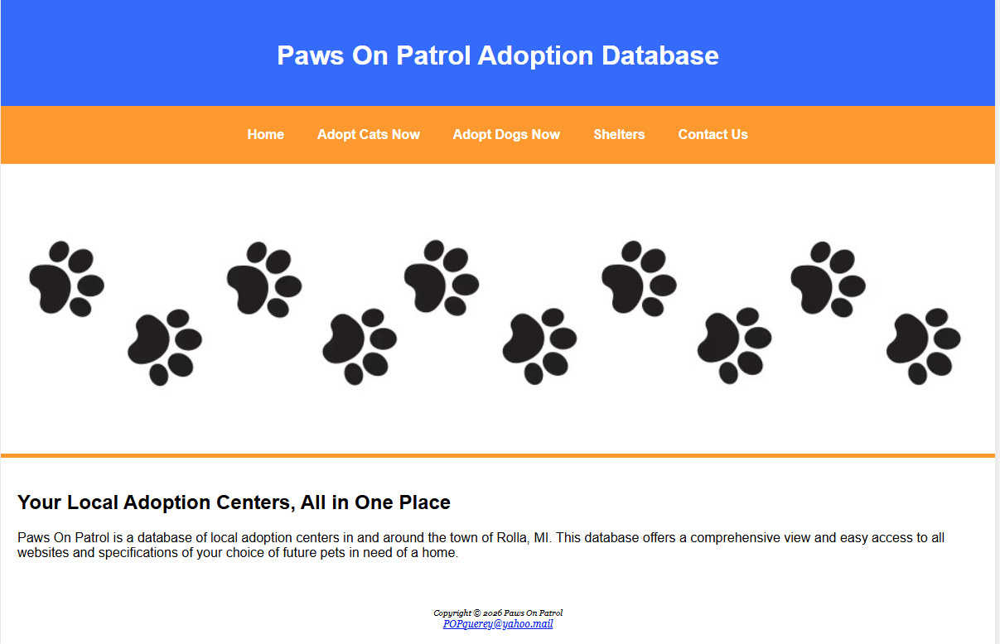

Paws On Patrol
2025HTML & CSS | Pet Adoption Database
Web Development Course, Missouri S&T — Team Project

Overview
Paws On Patrol is a multi-page pet adoption database website built with HTML and CSS, modeled after services like Petfinder and Adopt-a-Pet. The project aggregates local shelter information and adoptable animals in and around Rolla, MO into a single, easy-to-navigate interface. It was developed as a team project with two other students.
Features
- Separate browsing pages for cats and dogs with photos, names, and adoption details for each animal.
- A shelters directory with local partner organization information, addresses, and external website links.
- A contact form that allows users to submit questions and comments.
- Hero banner images on key pages and a consistent orange and blue color scheme throughout.
- Responsive layout that stacks to a single column on mobile screens.
My Contributions
- Built and styled multiple pages including the adoption listings and shelter directory.
- Implemented the pet entry layout using Flexbox for consistent image and text alignment across all listing pages.
- Contributed to the shared CSS stylesheet covering navigation, hero sections, and responsive breakpoints.
View the Project
Browse the full Paws On Patrol website below.
Open Paws On Patrol →